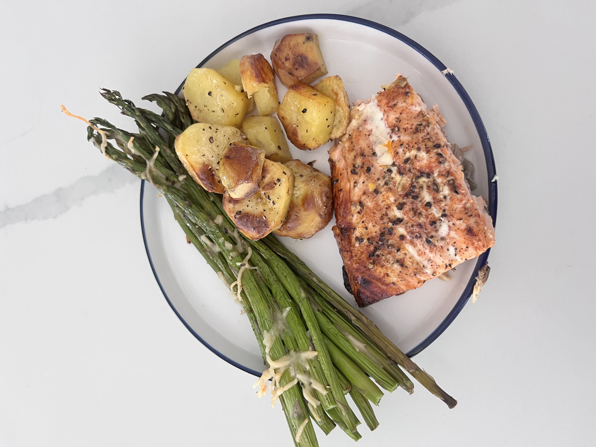

More about me!
Hi my name is khloe I am a student curently persuing a degree in computer scince in my free time I enjoy helping animals. I have a pet cat her name is kiddy I do plan to get more animals in the future. In my free time I also enjoy cooking.Below is an image of salmon rosted potatoes and Asparagus that I cooked!
Some of my favorite things
one thing I tend to really enjoy is soccer ive been watching the sport for many years. one of my favorite clubs is Ac milan. that is why I included the image above.One of my favorite movies ever is Catch Me If You Can. One of my favorite tv shows is Naruto. Narto is a japanese anime style show about good and evil characters. below I linked the current series A standings.
Visit espn.com! Visit Acmilan.com!